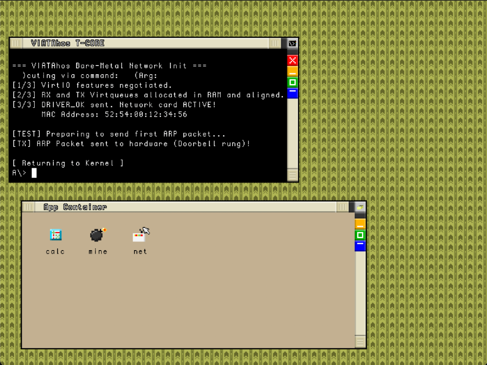
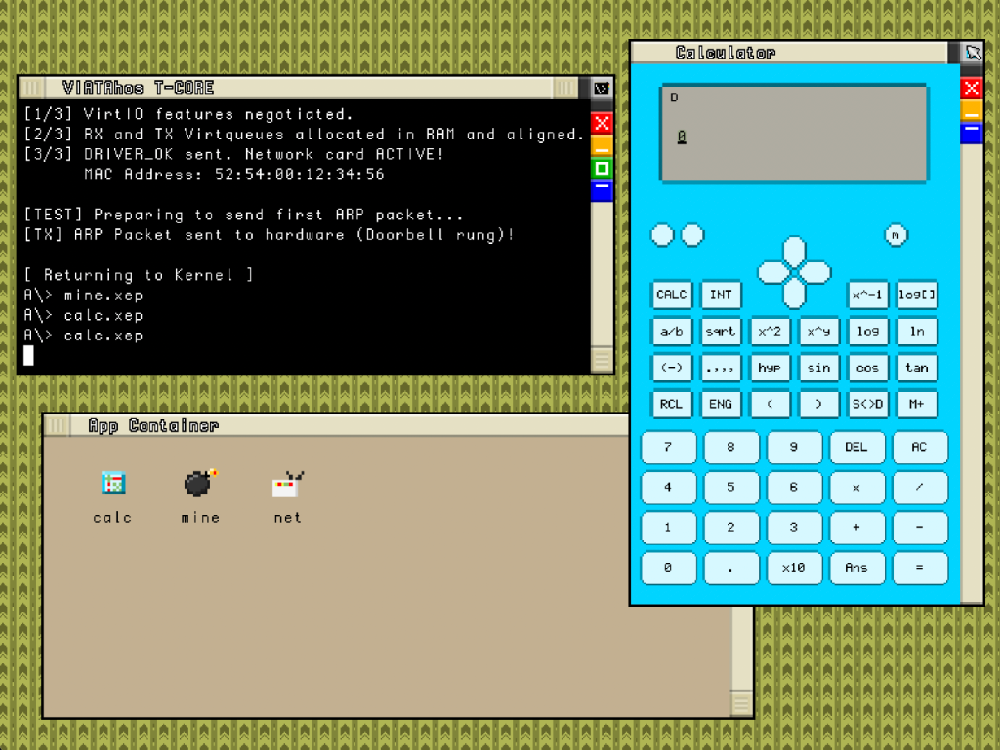
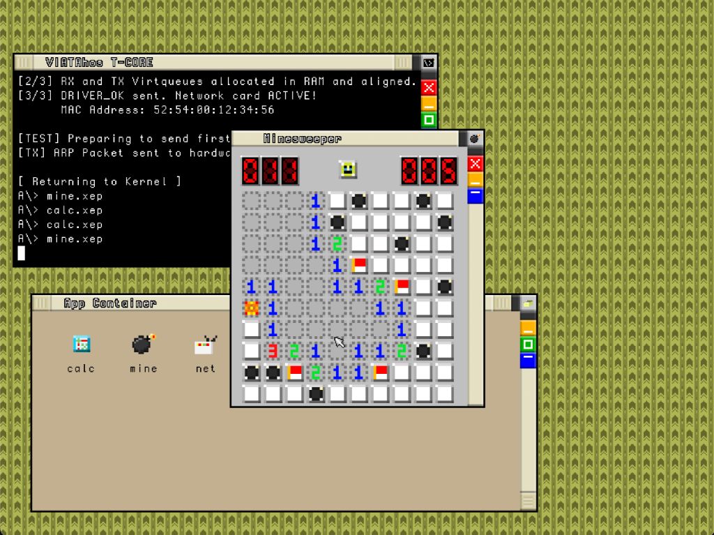

VIATAhos
Il sistema operativo homebrew, indipendente e a misura d'uomo.
The independently developed, human-driven, homebrew operating system.
La Nostra Visione Anti-UNIX
Our Anti-UNIX Vision
Cos'è VIATAhos?
What is VIATAhos?
VIATAhos è un sistema operativo progettato da zero per restituire il controllo digitale assoluto e l'indipendenza alla comunità.
Nasce con un'idea chiara: creare un ambiente di calcolo personale, libero e completamente slegato dalle regole, dai tracciamenti e dalle mode dei grandi colossi del web.
VIATAhos is an operating system designed from the ground up to restore absolute digital control and independence to the community.
It was born with a clear idea: to create a free, personal computing environment completely independent of the rules, tracking and trends of the major tech giants.
Spirito anni '80/'90 (Anti-UNIX)
'80s/'90s Spirit (Anti-UNIX)
Rifiutiamo la standardizzazione del software moderno. In VIATAhos le risorse hardware non sono mascherate come file sotto /dev, non esiste il mount e non c'è una root astratta /.
Ci ispiriamo alla filosofia di AmigaOS (Workbench) e Windows 3.x. In quell'età dell'oro, il computer era uno strumento familiare. Portiamo quella semplicità nelle moderne architetture.
We reject the standardization of modern software. In VIATAhos, hardware resources are not masked as files under /dev, there is no mount, and no abstract root /.
We are inspired by the philosophy of AmigaOS (Workbench) and Windows 3.x. In that golden age, the computer was a familiar tool. We bring that simplicity to modern architectures.
Architettura e Gestione Memoria
Architecture and Memory Management
Kernel e Architetture (x64, x86, ARM)
Kernel and Architectures (x64, x86, ARM)
Il kernel è scritto in C puro e Assembly. Aggiriamo le astrazioni forzate dei BIOS/UEFI moderni, comunicando direttamente con l'hardware.
Sviluppiamo per architetture 64-bit, 32-bit legacy e ARM a basso consumo per ridare vita a vecchi computer e supportare single-board computer economici.
The kernel is written in pure C and Assembly. We bypass the forced abstractions of modern BIOS/UEFI, communicating directly with the hardware.
We develop across 64-bit, legacy 32-bit, and low-power ARM architectures to breathe new life into older computers and support affordable single-board computers.
Ring 0 & Flat Memory
Ring 0 & Flat Memory
VIATAhos rifiuta la complessa parcellizzazione dei moderni SO commerciali.
Funziona interamente in modalità Ring 0 (privilegi kernel totali). Le applicazioni eseguite con privilegi amministrativi ottengono l'accesso diretto e senza filtri alla RAM e alle porte I/O in un modello di memoria piatta lineare (Flat Memory Model).
VIATAhos rejects the complex compartmentalization of modern commercial OSs.
It runs entirely in Ring 0 mode (full kernel privileges). Applications run with administrative privileges get direct, unfiltered access to RAM and I/O ports in a linear Flat Memory Model.
Gerarchia Drive e File System
Drive Hierarchy and File System
Gerarchia Reale (Drive da A: a F:)
Real Hierarchy (Drives A: to F:)
Il prompt mostra il disco selezionato e la modalità Admin. VIATAhos mostra la reale separazione fisica tramite storiche lettere di drive, rispecchiando la vera struttura della macchina:
- A: Floppy Disk (OS Protetto in R/O)
- B: Ottico (CD/DVD/Blu-Ray)
- C: Rimovibile (USB/SD)
- D: Fisso (HDD/SSD/NVMe)
- E: Nastro (Tape)
- F: Virtuale (RAM Disk)
The prompt shows the selected disk and Admin mode. VIATAhos shows real physical separation through historic drive letters, reflecting the machine's true structure:
- A: Floppy Disk (Protected OS in R/O)
- B: Optical (CD/DVD/Blu-Ray)
- C: Removable (USB/SD)
- D: Fixed (HDD/SSD/NVMe)
- E: Tape
- F: Virtual (RAM Disk)
File Tipizzati & Metadati ibridi
Typed Files & Hybrid Metadata
L'estensione determina in modo assoluto come il Kernel gestisce il file. Non esistono file "magicamente eseguibili" tramite flag nascosti.
- .xep - Eseguibili binari in RAM.
- .kvbn - Script di sistema (Batch).
- .vlib - Librerie dinamiche.
- .smol - Compressione LZ77 trasparente.
I file restano standard FAT32. I metadati e permessi sono salvati in File Ombra nella cartella nascosta \.viata\, garantendo 100% Plug & Play con Windows/Linux.
The extension absolutely determines how the Kernel handles the file. There are no "magically executable" files via hidden flags.
- .xep - Binary executables in RAM.
- .kvbn - System scripts (Batch).
- .vlib - Dynamic libraries.
- .smol - Transparent LZ77 compression.
Files remain standard FAT32. Metadata and permissions are saved in Shadow Files in the hidden \.viata\ folder, guaranteeing 100% Plug & Play with Windows/Linux.
Rete P2P Decentralizzata
Decentralized P2P Network
VIATAshare (Prossimità)
VIATAshare (Proximity)
Condivisione file offline, diretta e senza intermediari.
VIATAshare permette di scambiare dati e file tra dispositivi nelle vicinanze in modo completamente slegato da internet, usando tecnologie di prossimità per una libertà assoluta.
Offline, direct file sharing with no intermediaries.
VIATAshare allows you to exchange data and files between nearby devices completely independent of the internet, using proximity technologies for absolute freedom.
VIATAlink (Rete Globale)
VIATAlink (Global Network)
Il networking è decentralizzato. Slegato dai server Cloud corporativi.
VIATAlink è una rete P2P (DHT) basata su chiavi crittografiche pubbliche. Permette telefonate VoIP cifrate E2E, messaggi e condivisione file a distanza in totale sicurezza.
Networking is decentralized. Unbound from corporate Cloud servers.
VIATAlink is a P2P network (DHT) based on public cryptographic keys. It enables E2E encrypted VoIP calls, messages, and remote file sharing in total security.
L'Ecosistema Hardware e il Territorio
The Hardware Ecosystem and Territory
L'Ecosistema VIATA
The VIATA Ecosystem
La vera essenza del progetto è il recupero (Right to Repair):
- VIATAstation: Laptop storici e ThinkPad salvati dalle discariche, resuscitati con VIATAhos per ridare velocità.
- VIATAconnected: Cellulari feature-phone e dispositivi ARM modificati per far girare il core VIATAhos come terminali di comunicazione P2P non tracciabili.
The true essence of the project is recovery (Right to Repair):
- VIATAstation: Historic laptops and ThinkPads saved from landfills, resurrected with VIATAhos to restore speed.
- VIATAconnected: Feature phones and ARM devices modified to run the VIATAhos core as untrackable P2P communication terminals.
Radici a Villar San Costanzo
Roots in Villar San Costanzo
Le nostre idee si muovono fisicamente anche fuori dallo schermo, raggiungendo le strade di Villar San Costanzo (Cuneo, Italia).
Attraverso attivismo faccia a faccia, magliette comunitarie e campagne di adesivi locali, connettiamo l'antica tradizione rurale dell'"aggiustare ciò che si ha" con il moderno Right to Repair.
Our ideas also move physically outside the screen, reaching the streets of Villar San Costanzo (Cuneo, Italy).
Through face-to-face activism, community t-shirts and local sticker campaigns, we connect the old rural tradition of "fixing what you have" with the modern Right to Repair.
Scarica VIATAhos
Download VIATAhos
VIATAstation (VIATAhos for PC)
Per Desktop, Laptop (ThinkPad) e single-board ARM (es. Raspberry Pi).
For Desktops, Laptops (ThinkPads), and single-board ARMs (e.g., Raspberry Pi).
VIATAconnected (VIATAhos for Phone)
ROM di recupero per smartphone e feature-phone.
Recovery ROMs for smartphones and feature-phones.
Roadmap Interfaccia: T-CORE e GUI Nativa
Interface Roadmap: T-CORE and Native GUI
T-CORE (TUI Multitasking): L'utente può premere i tasti da F1 a F12 per passare istantaneamente tra 12 sessioni di terminale indipendenti.
L'obiettivo finale del progetto, però, è puramente visivo (comando tsi). Guarda in anteprima il nostro window manager nativo che richiama lo stile AmigaOS o Windows 3.x. Finestre bisellate 3D e pattern in pixel art per una massima fluidità:
T-CORE (TUI Multitasking): The user can press F1 through F12 to instantly switch between 12 independent terminal sessions.
The ultimate goal, however, is purely visual (tsi command). Preview our native window manager recalling AmigaOS or Windows 3.x style. 3D beveled windows and pixel art patterns for maximum fluidity:



I Nostri Repository
Our Repositories
VIATAhos
Il codice sorgente principale del kernel, bootloader e moduli x86/x64/ARM.
The main source code of the kernel, bootloader, and x86/x64/ARM modules.
.github
Documentazione organizzativa, regole di contribuzione, policy e by.txt.
Organizational documentation, contributing rules, policies, and by.txt.
VIATAhomebrew.github.io
Il codice sorgente di questo sito web ufficiale.
The source code of this official website.
Contribuire a VIATAhos & Sicurezza
Contributing to VIATAhos & Security
Regole di Contribuzione (by.txt)
Contribution Rules (by.txt)
Qualsiasi aiuto nello scrivere il kernel o i moduli futuri è prezioso. Ma abbiamo una regola fondamentale:
- Devi inserire il tuo nome nel file by.txt alla radice della repository.
- Le Pull Request senza la firma nel
by.txtnon verranno accettate, per mantenere trasparenza sulla paternità. - Tutto il codice è e resterà sotto licenza GNU GPL v3. Chiudere il codice non è permesso.
Any help in writing the kernel or future modules is invaluable. But we have a fundamental rule:
- You must include your name in the by.txt file at the root of the repository.
- Pull Requests without a signature in
by.txtwill not be accepted, to maintain transparency regarding authorship. - All code is and will remain under the GNU GPL v3 license. Closing the code is not permitted.
Policy di Sicurezza Kernel
Kernel Security Policy
Essendo un OS sviluppato interamente da zero, la stabilità a basso livello è cruciale. Se trovi una vulnerabilità critica nel Kernel o falle nella gestione memoria:
- Non aprire Issue pubbliche che potrebbero compromettere i test degli altri utenti.
- Contatta i manager privatamente usando la feature di reporting confidenziale su GitHub.
As a fully homegrown OS, low-level stability is crucial. If you find a critical Kernel vulnerability or memory management flaws:
- Do not open public Issues that could compromise other users' testing.
- Contact the managers privately using the confidential reporting feature on GitHub.
Il Nostro Team
Our Team
Ideato da AQUIL the eagle, gestito come collettivo familiare.
Sei uno sviluppatore in zona? Ti vogliamo nel team!
cirnueduard@yahoo.comCreated by AQUIL the eagle, run as a family collective.
Are you a developer nearby? We want you in our team!
cirnueduard@yahoo.comSostieni il Progetto
Support the Project
VIATAhos è gratuito, open source e sviluppato senza alcun tipo di finanziamento esterno o pubblicità.
Se ami la nostra visione Anti-UNIX e vuoi supportare le spese per l'hardware, considera di supportarci!
VIATAhos is free, open source, and developed without any external funding or advertising.
If you love our Anti-UNIX vision and want to support our hardware expenses, consider supporting us!